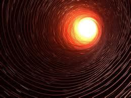

The "Well to Hell" is an urban legend regarding a putative borehole in Russia which was purportedly drilled so deep that it broke through into Hell. This urban legend has been circulating around the Internet since at least 1995. It is first attested in English as a 1989 broadcast by a U.S. domestic religion-based TV broadcaster, Trinity Broadcasting Network.
The legend holds that a team of Russian engineers purportedly led by an individual named "Mr. Azakov" in an unnamed place in Siberia had drilled a hole that was 14.4 kilometres (8.9 mi) deep before breaking through to a cavity. Intrigued by this unexpected discovery, they lowered an extremely heat-tolerant microphone, along with other sensory equipment, into the well. The temperature deep within was 1,000 °C (1,832 °F)—heat from a chamber of fire from which (purportedly) the tormented screams of the damned could be heard. However, the recording was later found to be looped together from various sound effects, sometimes identified as the soundtrack of the 1972 movie Baron Blood. The Soviet Union had, in fact, drilled a hole more than 12 kilometres (7.5 mi) deep, the Kola Superdeep Borehole, located not in Siberia but on the Kola Peninsula, which shares borders with Norway and Finland. Upon reaching the depth of 12,262 metres (40,230 ft) in 1989, some interesting geological anomalies were found, although they reported no supernatural encounters.[